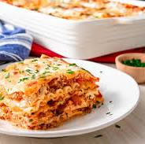

The World's Best Lasagna
This is probably the best lasagna you'll ever create!
It's said to have been fed to the Italian generals, Mario and Luigi
Legend has it that this mushroom infused lasagna is what boosted their moral in times of hardships against the opposition faction belonging to Bowser!
Ingredients
- 1 lb of Mushrooms from the Mushroom Kingdom (Preferably Red or Golden
- 3/4 lb turtle meat
- 1/2 cup water
- 1 (28 ounces) can crushed tomatoes
- 2 (6 ounce) can crushed tomatoes
- 2 (6.5 ounce) cans canned tomatoe sauce
- 1 teaspoon Italian Seasoning
- 12 Lasagna Noodles
- 16 ounces ricotta cheese
- 1 Yoshi Egg
- 3/4 lbs Mozzarella Cheese
- 1 teaspoon salt and pepper
Recipe Instructions
- Cook Mushroom and Turtle Meat over medium heat until well browned. Stir in crushed tomatoes, tomato paste, tomato sauce, and water. Season with Italian seasoning, 1 teaspoon salt and pepper. Simmer, covered, for about 1 1/2 hours, stirring occasionally.
- Bring a large pot of lightly salted water to a boil. Cook lasagna noodles in boiling water for 8 to 10 minutes. Drain noodles, and rinse with cold water. In a mixing bowl, combine ricotta cheese with egg.
- Preheat oven to 375 degrees F (190 degrees C).
-
- To assemble, spread 1 1/2 cups of meat sauce in the bottom of a 9x13-inch baking dish. Arrange 6 noodles lengthwise over meat sauce. Spread with one half of the ricotta cheese mixture. Top with a third of mozzarella cheese slices. Spoon 1 1/2 cups meat sauce over mozzarella.
- Repeat layers, and top with remaining mozzarella
- Bake in preheated oven for 25 minutes. Remove foil, and bake an additional 25 minutes. Cool for 15 minutes before serving.
Return to Top
Return to Main Page